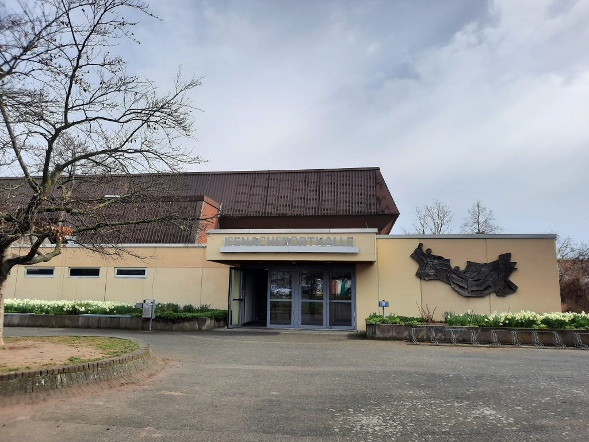

Unsere Halle
Adresse: Eppsteiner Straße 55, 67227 Frankenthal [Google Maps]
Die Isenachsporthalle ist die sportliche Heimat unserer Badmintonabteilung. Die moderne Multifunktionshalle wird uns von der Stadt Frankenthal zur Verfügung gestellt und bietet mit sechs Badmintonfeldern ideale Bedingungen für Training, Spielbetrieb und Turniere.
Bei Turnieren sorgt eine fest installierte Lautsprecheranlage für gute Verständlichkeit und eine stimmungsvolle Atmosphäre. Eine Zuschauertribüne bietet ausreichend Platz, um Spiele bequem zu verfolgen und unsere Mannschaften zu unterstützen.
Großzügige Umkleiden sowie ein separater Nebenraum, der sich für Catering, Besprechungen oder kleinere Veranstaltungen eignet, runden die Ausstattung ab.
